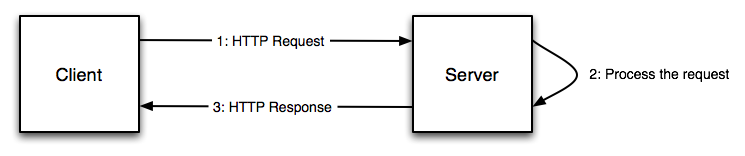
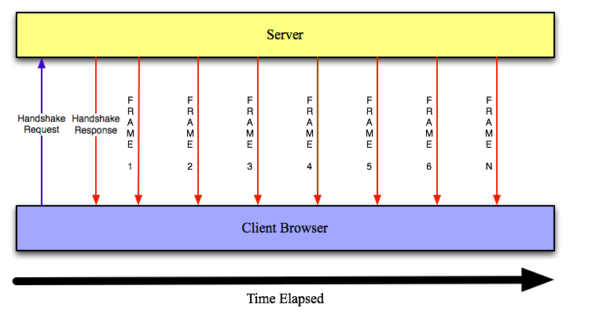

Html5 Tutorial : Web Sockets
- Previously included in the communication section of the HTML5 specification as "TCPConnection", Web Sockets allow a real-time, full duplex communication using a single socket.
Effectively, most of web applications today requires a real-time communication of the data between a client (browser) and a server:
- Chat applications such as the Facebook chat
- Live sports result applications
- Stock quote application
- Etc…
This chapter will be discussing about the following:
- Overview of the current solutions that are used to simulate real-time communication between a client (browser) and a server
- Overview of the web sockets API and protocol
- A comparison between web sockets and previous technologies
The HTTP protocol is half duplex. The way browser request a web page is the following:
In the context of "real-time" web applications, many problems arise:
- As soon as the user sees the data on the web page, this data might be already obsolete and out-dated
- Most of the time, it is impossible to predict the presence of data to be consumed by the client
- Continuously refreshing the page is obviously not a good solution ⇒ very poor user experience!
To circumvent this problem, many solutions have been invented. Among them, we are going to discuss two of them that make use of AJAX:
- Polling architecture
- Long polling architecture

- Using the polling architecture, the client (browser) have to regularly send requests to the server at the same interval and receive responses to check if a new message is available
- The problem here is that many request/responses are made whenever there are no messages for the client since there are no way to be notified by the server (it is a pull architecture instead of push)

- Long polling is like polling and is also known as asynchronous polling
- The difference is that the server keeps the request open for a set period (until a timeout is reached or if the server send a response)
- While it seems to be a better architecture than polling, long polling can be a problem when the server have to send data to the client very frequently ⇒ long polling just become almost like polling
Originally labelled as "TCPConnection" in the previous version of the HTML5 specification, web socket is going to be the revolution for real-time communication between a browser and a server
- Full duplex
- Bi-directional communication channel using a single socket (TCP)
Web Sockets are specified in two places:
- The Web Sockets API is maintained by HTML5 editor Ian Hickson: http://www.w3.org/TR/websockets/
- The protocol is edited by Ian Fette: http://tools.ietf.org/html/draft-ietf-hybi-thewebsocketprotocol
- Many draft versions of the protocol exists, the one that we explain here is the version 76
-
The Web Sockets protocol exists with two schemes:
ws:orwss:for secure web sockets To start a web socket connection between the client and the server, there is a handshake to upgrade the connection from HTTP protocol to web socket protocol
![[Note]](../images/note.png)
Note It is important that your server supports web sockets
Below is for instance the request headers sent by the client (The order of the request headers sent by the client is not important):
GET /chat HTTP/1.1 Connection: Upgrade
 Host: example.com
Origin: http://example.com
Host: example.com
Origin: http://example.com  Sec-WebSocket-Key1: 284 ^rI 2 447 8 Me1*V 8
Sec-WebSocket-Key1: 284 ^rI 2 447 8 Me1*V 8  Sec-WebSocket-Key2: 30]8N763$84 12>
Sec-WebSocket-Key2: 30]8N763$84 12>  Upgrade: WebSocket
Upgrade: WebSocket  64:6E:AC:0C:FD:90:8A:51
64:6E:AC:0C:FD:90:8A:51 
Upgrade offer to use Web Sockets This field protect against unauthorized cross origin request to the web socket server Random tokens that the server will use to construct a 16 byte token saying it has read the client handshake Below is the response sent by the server:
HTTP/1.1 101 WebSocket Protocol Handshake Upgrade: WebSocket Connection: Upgrade Sec-WebSocket-Origin: http://example.com
Sec-WebSocket-Location: ws://example.com/chat
79:C5:C1:29:4A:60:8B:34:66:D5:61:10:C2:0C:4F:AA Clients using the Web Sockets have to be under this same origin Location of the Web Sockets 16 byte token constructed by the server using the Sec-WebSocket-Key1and theSec-WebSocket-Key2request headers from the client plus the 8 byte token to say that the client handshake has been read- Once the handshake is established, the server can send messages to the client using frames
A frame is delimited by: [0x00 byte][UTF-8 message data][0xFF byte]
Note Of course, the client can also send messages to the server
- There is a JavaScript API to use Web Sockets in your applications
The Web Socket interface is the following:
[Constructor(in DOMString url, in optional DOMString protocol)] interface WebSocket { readonly attribute DOMString URL; // ready state const unsigned short CONNECTING = 0;
const unsigned short OPEN = 1;
const unsigned short CLOSED = 2;
readonly attribute unsigned short readyState;
readonly attribute unsigned long bufferedAmount;
// networking
attribute Function onopen;
attribute Function onmessage;
attribute Function onclose;
boolean send(in DOMString data);  void close();
void close();  };
WebSocket implements EventTarget;
};
WebSocket implements EventTarget; Possible values for the readyStateattribute:CONNECTING(when the connection has not been established yet),OPEN(communication is established) andCLOSE(when the connection has been closed or could not be opened) Event handler when the connection is opened Event handler when the client receives a message from the server Event handler when the connection is closed Method to send messages to the server Method to close the Web Socket connection How to create a Web Socket?
var socket=new WebSocket("ws://127.0.0.1:8080/"); This connect to a web socket located at ws://127.0.0.1:8080/How to define event listeners for our Web Socket?
socket.onopen = function(){ alert("Connection to the socket is now open"); } socket.onmessage = function(e){ alert("Message received: " + e.data); } socket.onclose = function(e){ alert("Connection to the socket is closed"); }How to send a message to the server?
socket.send("This is the message sent by the client"); It is possible to send messages between the onopenlistener and theoncloselistener
Using polling and long polling:
- HTTP request and response headers are sent back and forth at a certain interval ⇒ big overhead here!
- There might not be new data for the client ⇒ Useless requests are sent!
Using Web Sockets:
- HTTP request and response headers are sent only once during the handshake
- A frame size is at least 2 byte: [0x00 byte][UTF-8 data message][0xFF byte]
- The server notifies the client of new messages, there is no need to hammer the server with unnecessary requests!
- All of this obviously lead to reduce the network traffic and the network latency